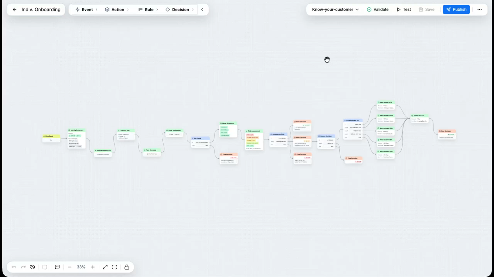
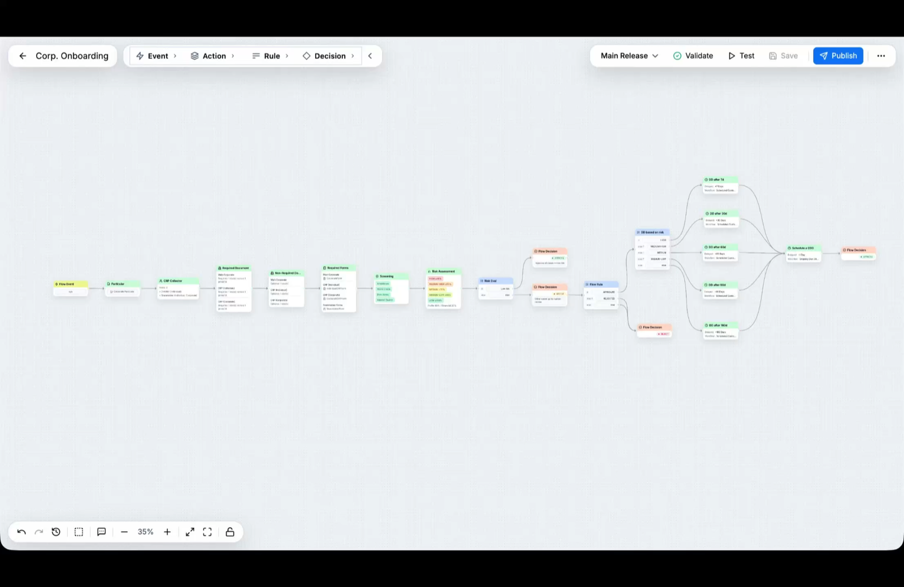
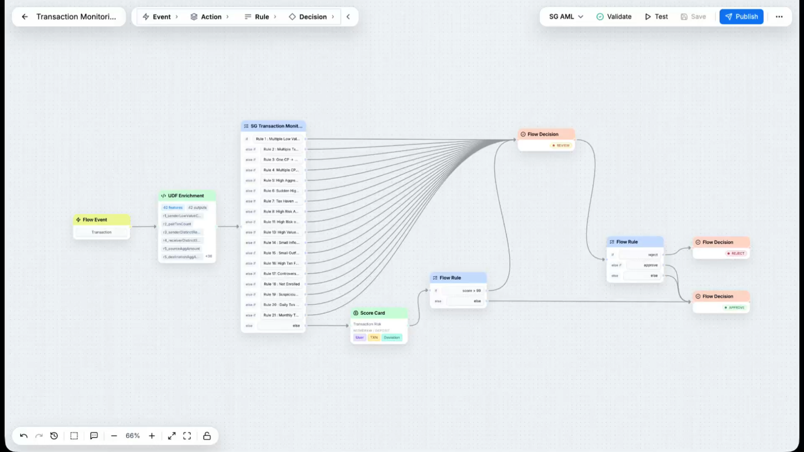

KYC/KYB → 筛查 → 监测 → 案件 → SAR/STR 报送，一条链。
单一客户图谱之上，多智能体白盒执行。
法币与链上同台，覆盖银行到 VASP。
Deepfake 同比 +700% · 合成身份 · 智能化跑分网络 · 跨链洗钱。
FATF · MAS FEAT · HKMA 生成式 AI · 欧盟 AI Act，逐季更新。
4–5 套传统 AML 拼在一起、人员预算持平、无共享数据模型。
KYC · KYB · 筛查 · 监测 · 调查 · 案件管理，端到端一体。
AI 提议、人工审批；75% 误报自动关闭；每次输出一致且符合政策。
可供监管复盘；每个决策可解释、可引用；KYC→案件完整证据链，可直接导出。
KYC/KYB · 身份核验 · 生物识别
筛查 · 交易监测 · 欺诈检测 · KYT
图智能 · UBO 发现 · 网络分析
AI 审核员 · 案件管理 · SAR/STR



只看到 A→B 单笔交易；遗漏共享设备 / 地址 / UBO / 隐藏资金流。结果：90% 误报 + 漏检跑分网络。
看到 A→B→C→D→E 多跳实体网络；揭示洗钱网络、共享设备、共同 UBO、隐藏所有权链。无限多跳 · 统一实体解析 · 自动欺诈环检测。
预警 / 命中 / 转办进入队列。
AI 扩展图谱：交易对手、设备、钱包。
隔离并标注可疑子图。
生成处置草稿，引用每个信号来源。
上游信号→结构化证据
应用辖区规则手册
贯穿案件·暴露缺口矛盾
置信度·标记不确定·引用来源
建议处置·可审计复盘
KYC / KYB / 筛查 / 交易监测预警汇聚到单一分析师工作区。
每个处置都连接 KYC 历史、筛查命中、监测模式、图谱证据。
每步带时间戳、归属，可导出为证据包；WORM 留痕最长 10 年。
曾：92% 误报、6 人 FCC、4 套工具、季度检查发现问题。
现：4.1× 处理量、年化省 $1M、检查零问题。
曾：KYT 预警激增，每季 20 万、人工分诊疲劳。
现：误报降 65%、调查提速 10×、SAR 零漏报。
以统一平台替代拼装工具栈——实时筛查放行、审计就绪。
Cynopsis 于新加坡成立；获 MAS FinTech Awards 等重要认可。
扩展至 500+ 客户、180 个司法辖区、100+ 合作伙伴；Vernal Capital 收购 Cynopsis。
WIDTH 正式发布、获评 FinCrimeTech50；香港办公室成立，SG / HK / BJ 三支持中心。
① 在监管生态中成长。
② 领导团队深度参与 MAS、HKMA、IMDA、BNM、JFSA 工作组。
③ 组织并连接其他机构常引用的监管方。
④ 顾问团队含前政策制定者、监管人员与行业专家。
创立 Huobi Group 与 Chainup；2025 年 10 月主导 Vernal Capital 收购 Cynopsis Solutions，组建 WIDTH。新加坡国立大学 EMBA。
曾任职 PwC、ING、麦格理；2014 年创立 Cynopsis Solutions，获 MAS FinTech Award、连续四年入选 RegTech100。南洋理工大学荣誉学位。
主导 WIDTH 平台与 AI / 图智能引擎的技术架构与工程交付。
负责集团财务、融资与资本策略。
负责产品与运营，并主管香港市场。
银行与金融 · 保险
支付 · 数字资产与交易所
资产管理 · 企业客户
由新加坡金融管理局牵头，最高级别的监管与市场验证。
由 International Compliance Association 表彰，树立监管合规高标准。
由 FinTech Global 评为全球领先的金融犯罪防控创新者之一。
标准化即插即用工作流
AI 驱动效率提升
规模经济
零交付冗余
| 维度 | 传统 AML | 单点工具 | 实体解析专家 | WIDTH |
|---|---|---|---|---|
| 覆盖范围 | 监测为主、准入有限 | 仅准入 | 仅图谱调查 | KYC+KYB+筛查+监测+案件+图谱+AI 审核 |
| AI 定位 | 叠加在旧产品上 | AI 原生但窄 | 图 ML、无智能体层 | AI 原生 + 智能体化，端到端 |
| 监管适配 | US/EU 出身、后补 APAC | KYC 视角 | 仅企业级 | APAC 原生：MAS/HKMA/BNM/OJK 为首要设计目标 |
信息安全管理，年度审计
隐私信息 / AI 管理（2026 H2）
EU + APAC 隐私保护内建
季度第三方测试 · 按客户要求
| 法律职责 | 平台能力 |
|---|---|
| 客户尽调 / UBO | KYC + KYB 准入 + 关系图谱 |
| 制裁 / PEP / 负面媒体筛查 | 模糊匹配筛查引擎 |
| 客户风险评级 | 可配置风险评分（CRA） |
| 持续与链上监测 | 交易监测 + 链上监测（KYT） |
| 转账信息规则传输 | Travel Rule + Know Your Agent，阈值感知 |
| 可疑交易报告 | 案件管理 + STREAMS / SONAR / goAML 模板 |
Dow Jones · LSEG · World-Check
Chainalysis · Merkle Science · ChainUp
Regula · AsiaVerify · Veriff · Facetec
1 周 · 目标、场景、接口范围、里程碑与负责人
1–2 周 · 集成、测试环境、核心工作流与数据验证
1 周 · 近生产场景测试、修复、验收、上线
培训、SOP、持续本地支持
共同定义成功指标 · 生产级环境 · 第 7 天做 Go / No-Go。
完整供应商问卷 · ISO 27001 证据、VAPT 摘要 · 48 小时内返回。
60 分钟闭门会 · CEO 对你的 CTO / CCO · 战略与路线图深聊。